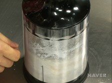
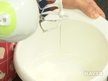
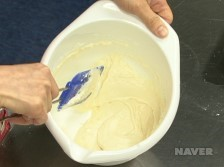
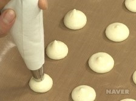
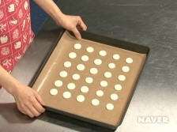
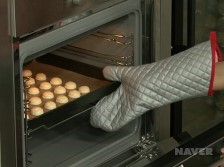
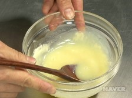
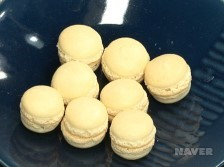

마카롱 만드는 방법 |
|---|
|  |  |  |  |
|---|---|---|---|
01 푸드프로세서에 아몬드가루와 슈가파우더를 넣고 곱게 간다.(입자를 곱게하면 마카롱 표면이 매끄러워진다.) |
02 볼에 달걀흰자를 넣고 핸드믹서의 거품기로 거품을 내면서 |
03 푸드프로세서에 아몬드가루와 슈가파우더를 넣고 곱게 간다. |
04 짤주머니에 깍지를 끼워 반죽을 담고, 테프론 시트를 깐 오븐 팬에 동그랗게 짠다. |
|  |  |  |  |
05 실온에서 1시간 이상 말린다.(겉 표면을 손으로 만졌을 때 묻어나지 않을 때까지 건조한다.) |
06 160˚C로 예열한 오븐을 145˚C로 낮춰 마카롱 반죽을 넣고 10~12분간 굽는다. 완전히 식힌 후 테프론 시트에서 떼어낸다. |
07 냄비에 생크림을 넣고 가장자리가 끓기 시작하면 불을 끈다. 화이트 초콜렛을 넣고 저어가며 녹인다. |
08 짤주머니에 가나슈를 담고 마카롱 안쪽에 짠다. 다른 마카롱으로 덮는다. |